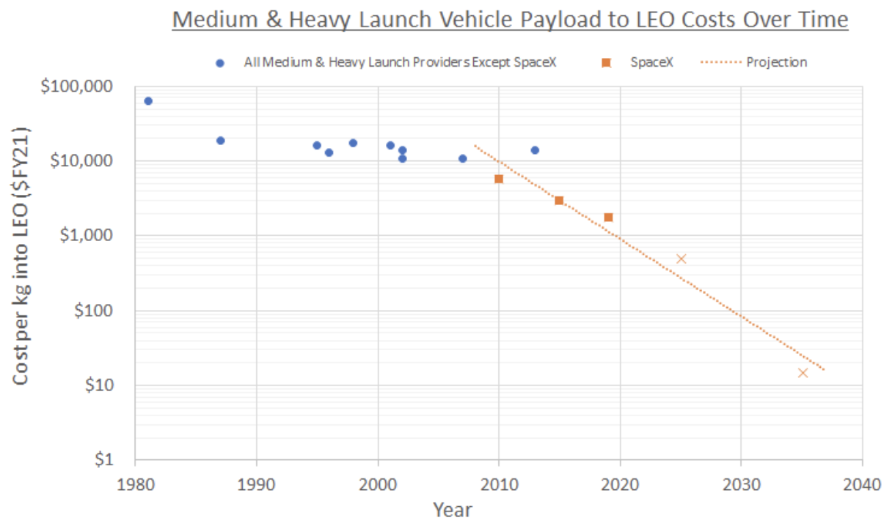

Launch costs drop another order of magnitude
By 2030 the cost of launching a payload into low earth orbit (LEO) will have decreased by one order of magnitude. This decline is enabled by the SuperHeavy lift reusable booster and fully reusable second stage of SpaceX’s Starship rocket. If SpaceX is able to get to a high operational flight rate, that cost could drop a further order of magnitude between 2035 and 2040. There are competitor launch companies also pursuing a fully reusable second stage, using active cooling heat exchangers instead of tiles. This should enable the long-sought after dream of “aircraft-like operations” that was originally envisioned for the Space Shuttle in 1970.
Below is a trendline for launch costs over time. Many people have seen a linear version of this chart. With the introduction of SpaceX reusable SuperHeavy Booster and reusable Starship Second Stage, the data is better visualized changing to a log-scale Y-axis.
Launch Costs Over Time (projection based on data from Elon Musk tweet on high flight rate Starship costs and forecast of when high cadence might be achieved)
Two things stand out on this chart. SpaceX, in orange boxes, is the only company to have achieved an order of magnitude reduction in launch costs in the last 40 years. All other medium- to heavy-launch providers thus far have maintained a price between $10,000-$20,000 per kg to LEO. (The outlier in 1981 is the first reusable launch vehicle: the Space Shuttle.) With the Falcon Heavy, SpaceX has dropped launch costs under $2,000 per kg. This demonstrated history of success in lowering costs makes SpaceX the de facto standard for the industry. May all the competition rise to the occasion, so we can get humanity’s launch rate up!
You can read more about the history of expendable vs reusable rockets and the technologies and management culture that are enabling lower launch costs here.